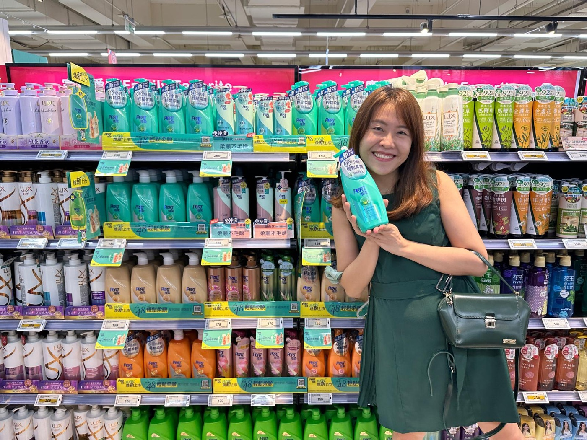

2016–2022
Procter & Gamble
Account Manager → Sr. Product & GTM Strategy Manager
Data finds the opportunity. Execution captures it.
107%
of sales target across 10 launches, leading a 9-person team
2×
online market share in 10 months, through A/B-tested pricing, bundles & CRM
+5%
gross margin by turning a profit-diluting brand into a growth driver
$300K
saved every year by de-risking supply on an 800+ SKU account